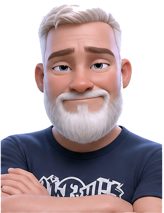
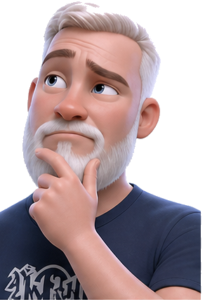
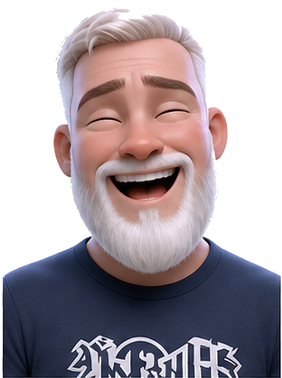
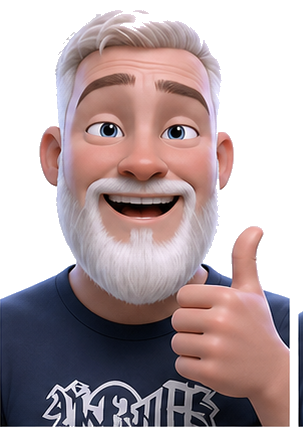
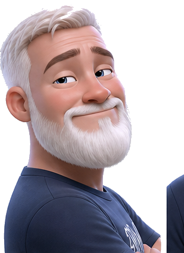
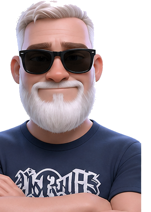
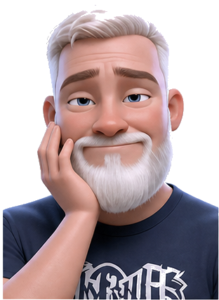
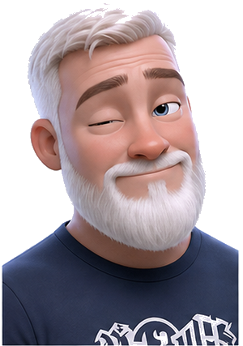
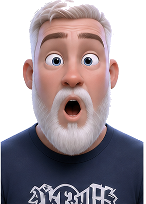
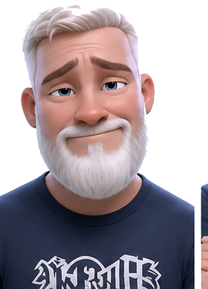

Homepage hero
Default guide: capable, friendly, and not gimmicky. Best all-purpose choice.
Picture placement mockup
These options use the portraits where a human cue helps: trust, explanation, delight, and a little personality at decision points.
Recommendation: use one primary portrait on the homepage and one smaller contextual portrait per major path. Keep product cards focused on the software itself.
Placement map
Choose the tone you want first. The page placement follows from that.

Default guide: capable, friendly, and not gimmicky. Best all-purpose choice.

Use near project scoping or brief CTA. It says, “let’s think this through.”

Use where the tone can be more energetic: live sessions, lessons, community.

Use after submissions, purchases, or successful signups. Clear positive feedback.
Option A
This is the one place I would go big. It humanizes Mojo without stealing attention from the offer.
Mojo AI Studio
Buy focused AI apps, commission custom AI development, or learn how the tools are built from someone who actually ships them.
Option B
Use smaller portraits where they reinforce the page’s next action.
Custom AI Development
Use confident beside “Submit a project brief” or the hero CTA. It makes the consulting side feel steady, capable, and personal.
Advanced AI Concepts
Use thinking-up near the events section. It keeps the community page curious and thoughtful while still making it feel human-led.
Products
Use thumbs-up in “built and supported by Mojo,” not inside every product card.
Sell

Use over-the-shoulder near the listing CTA so it feels like an invitation.
Success states

Use sunglasses after a brief, listing, signup, or checkout lands successfully.
Expression palette
Pick favorites. I can then wire the chosen placements into the real pages.



